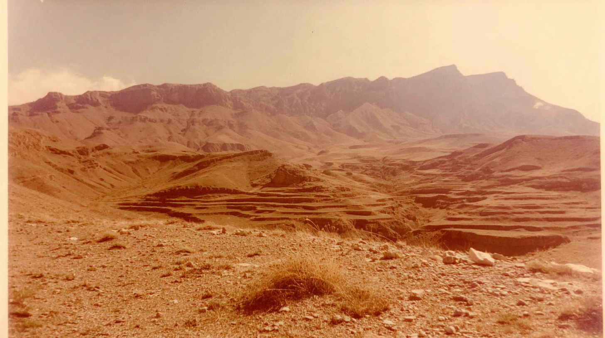
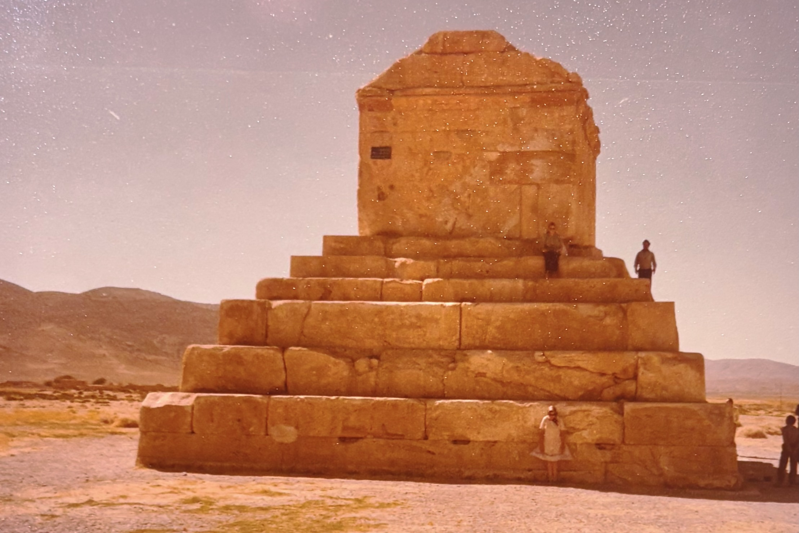
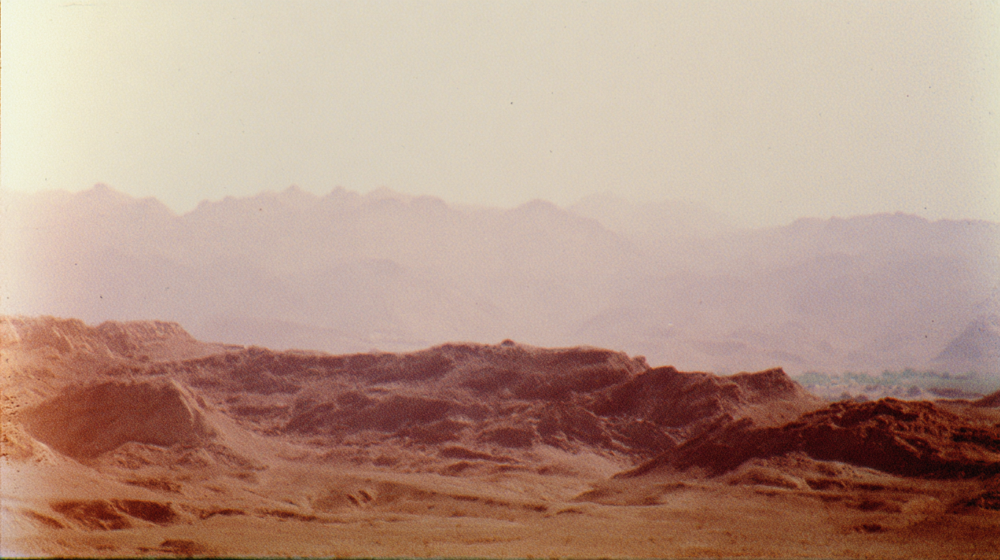
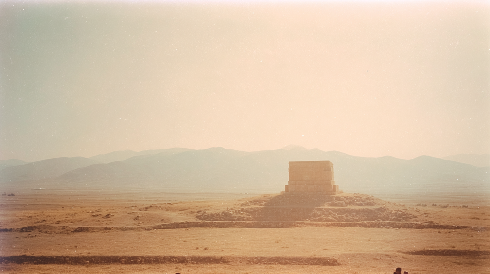
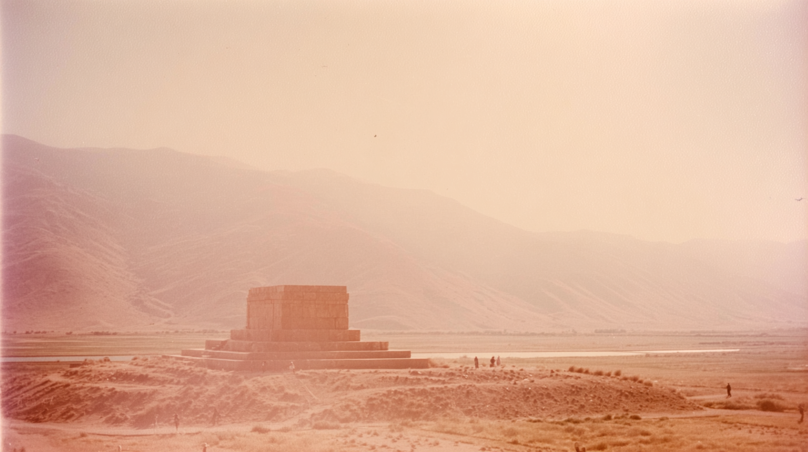

Terraced desert hills unfold toward a dramatic mountain ridge, the landscape washed in warm, dusty light.
Softly eroded desert ridges stretch into a hazy horizon, their layered forms fading into pale mountains beyond.
A solitary stepped monument rises from a vast open plain, centered against a muted mountain backdrop under a bright sky.
tomb of Cyrus, with tourists, subtle shutter motion, dessert flat surrounded by distant hills barely visible through haze, faded analog photograph, sun-bleached colors, subtle dusty pink and muted tones, soft film grain, subtly overexposed sky some detail, heat shimmer distortion,
homestyle composition, 35mm kodachrome, muted natural colors, low contrast grading, soft highlights, hazy atmosphere, arid heat. warm sky, soft warm reflections on wet sand. Light film grain, organic texture, low digital sharpness, no vivid colors. Shot like contemporary cinema, realistic, alive, subtle faded blurry shutter motion